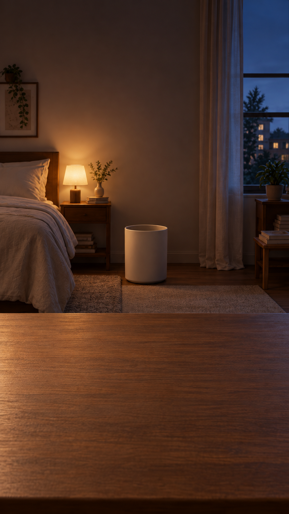
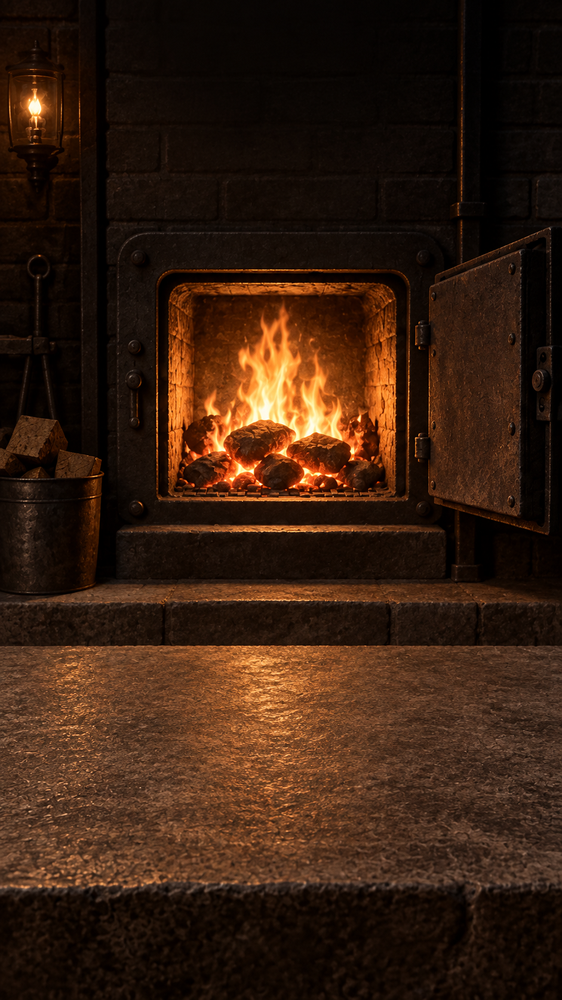

A quiet ritual for iPhone
Write it.
Crumple it.
Let it go.
A thought you keep replaying. Tomorrow’s deadline. That one awkward moment. Put it on paper, feel it crumple, and send it on its way.
No scores. No perfect aim. Just a small moment to yourself.
Explore the experienceComing to the App Store · iOS 18 or later

Find your space.
My Room, The Furnace and The Void are included. One optional purchase unlocks The Volcano, The Ocean and Snowfall, and removes banner ads.

The Furnace · Burn it.
The Void · Erase it.
The Ocean · Let it drift.
Included with Complete Experience
Made to be heard.
Detailed paper sounds follow your gestures, with gentle haptics and a different atmosphere in every world. Headphones bring out the details. Sound, haptics and simple button controls are adjustable.